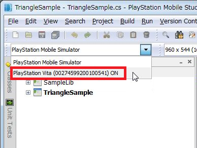
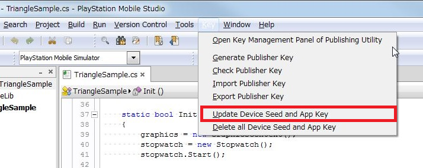

This document explains the procedure for executing a PSM application on a PlayStation(R)Vita.
Note that in order to execute on PlayStation(R)Vita, a memory card and a connection to a wireless (Wi-Fi/3G) network will be required for the environment.
Contents
First, download PlayStation(R)Mobile Development Assistant to the PS Vita.
Development Assistant is an application used for development of PSM applications on PS Vita.
Perform the download with the following procedure. If the download is already completed, perform an update with the orange [Update] icon that is displayed in the LiveArea(TM).
Insert a memory card into the PlayStation(R)Vita.
Perform developer registration on the DevPortal with the PSN(SM) (Sony Entertainment Network) account registered in the PS Vita.
After developer registration is complete, it will be possible to download Development Assistant from the PlayStation(R)Store. Start the PlayStation(R)Store app in the PS Vita home screen.
Tap the button in the lower right and select Download List in the menu that appears.
Select the [Game] tab at the top of the screen.
Search for [PlayStation(R)Mobile Development Assistant], then tap [Download] to the right of the title to download and install it.
When download and installation is successful, the following icon will appear on the PS Vita home screen.
- Connect the development PC and PlayStation(R)Vita with the included USB cable.
- In the PS Vita Home screen, tap the [Settings] icon, then select [Date & Time] - [Date & Time Settings] - [Set via Internet] so that the date/time will be automatically obtained from the network.
- When the date and time have been obtained in the PS Vita, synchronize the date/time of the development PC with the PS Vita.
App Keys must be created to execute a PSM application on an actual device. The procedure for creating an App Key is explained as follows.
- Have preparation completed with Preparation for Executing PSM Applications on Actual Devices.
- Open the solution file of the PSM application to execute on PSM Studio.
- Tap the "PSM Dev" icon in the PlayStation(R)Vita Home screen to start DevAssistant.
- The devices connected to the PC will be displayed on the drop-down list - select the target PS Vita ( xxxxxx ).
Figure 1 Vita Selection
Note: The PlayStation(R)Vita ID number will be displayed in ( xxxxxx ). The ID varies for each PlayStation(R)Vita.
Note: If the drop-down list is inactive ("OFF" is displayed), it means that DevAssistant has not been started. Tap the "PSM Dev" icon in the PlayStation(R)Vita home screen to start DevAssistant.
- Select the menu's [Key] - [Update Device Seed and App Key] to create the Device Seed and App Key.
Figure 2 Device Seed and App Key Update
- Follow the instructions displayed in the dialog to make your input. The creation of the Publisher Key will be requested for the first time - create as instructed.
- Successful creation of the App Key completes the preparation process.
After creating a key, rebuild the project with [Build] - [Rebuild All] in the menu.
Prepare the Vita for Internet connection. Upon starting up the PSM application, a connection will be made to the SCE server for authentication.
Note: With a PlayStation(R)Vita, when authentication is successful, the authentication process will be omitted for the next 24 hours.
From the menu, select [Run] - [Debug], or press the F5 key to transfer related files from the development PC to the PlayStation(R)Vita memory card; the application will start up.
- Regarding details on keys, refer to Key Management.
- Regarding PlayStation(R)Mobile Development Assistant, refer to About PlayStation(R)Mobile Development Assistant.